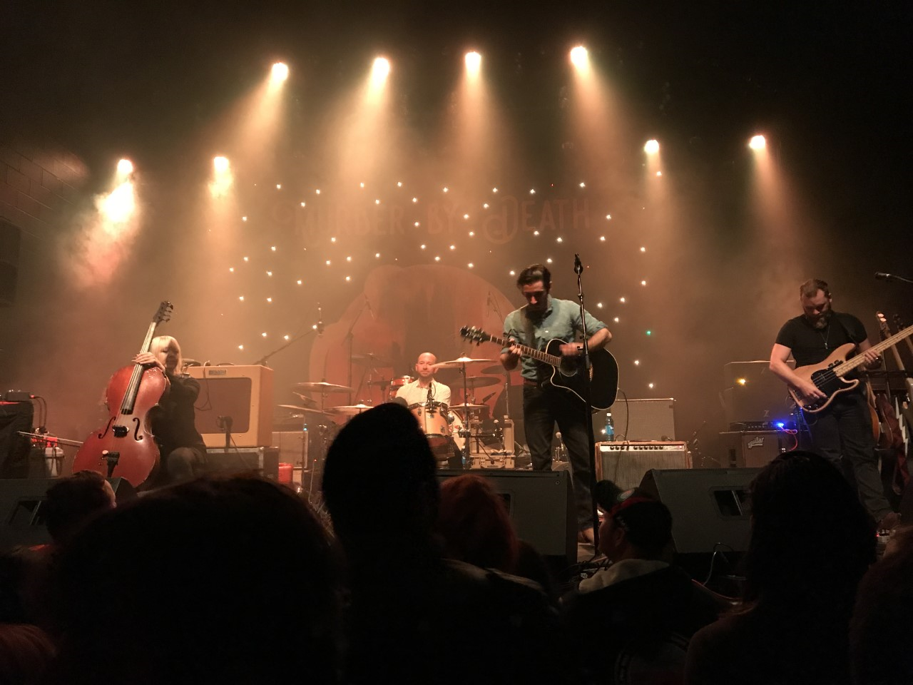
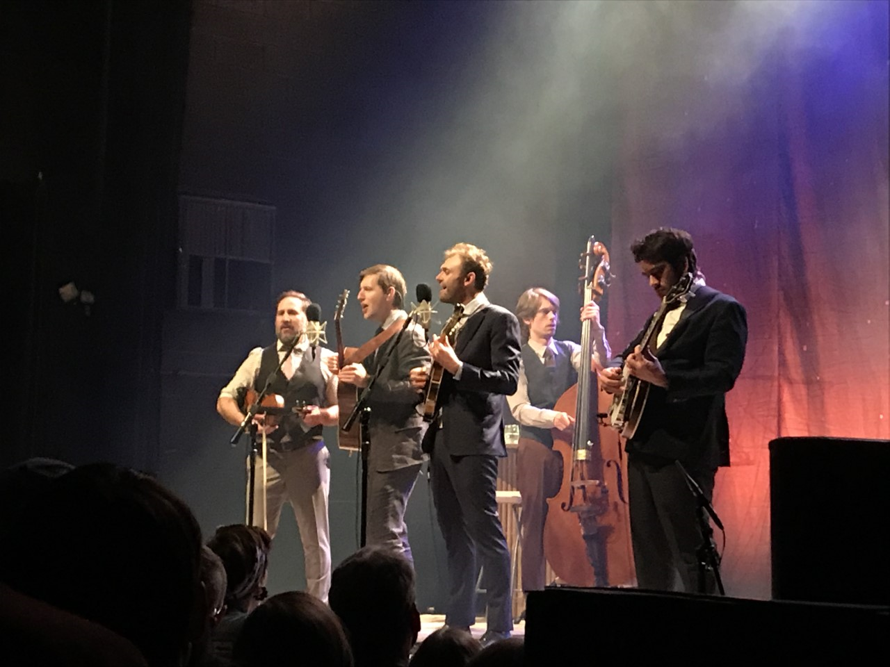

This page is dedicated to my photos and thoughts of concerts I have been to and concerts I hope to attend. I am hoping to share my thoughts on the music I love. Athens has such a rich and vibrant music scene and that has got to be my favorite part of the town. I will share my past experiences attending concerts with an emphasis on those in Athens. Additionally, I will share a list of concerts I hope to attend in the future.
|

|
|---|
|
This is a photo of the band Murder By Death taken by me at the Georgia Theater. This is one of my favorite concert photos I have taken because the lighting is very beautiful and the backdrop was amazing. The show was very fun and in addition to MBD playing, J Roddy and the Business also played. It was one of Tthe greatest shows I have been to and either of these bands are definitely worth seeing if given a chance. |
Dawes is one of my favorite bands and are so great live!
They have really fun shows and are fantastic performers
I have seen this band three times now and they seem to get
better each times. My first time seeing them, I was not very
familiar can say that whether you are a big fan or have never heard them,
they will thoroughly entertain you
|

|
|---|
|
I ended up seeing the Punch Brother by myself, and, as it turned out, I had a blast. They made the audience feel truly special and were incredibly captivating. They are some of the most talented musicians I have ever seen and are very good at engaging the audience. They are well worth the money to go see them and will gift you a very unique night |